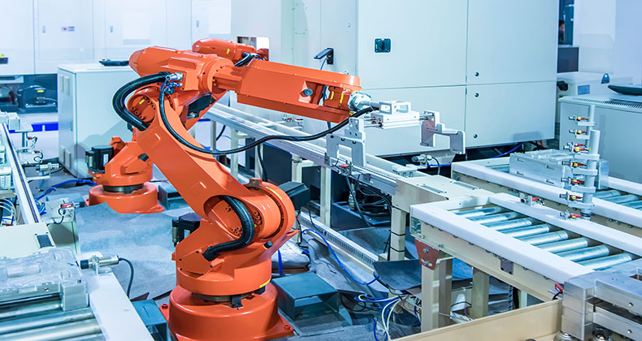

Ciberseguridad
Ciberseguridad
Que no te estafen durante la declaración de la Renta
Como cada año por estas fechas, los contribuyentes tienen que rendir cuentas. Te contamos cómo detectar campañas fraudulentas y protegerte.
Leer más
Explora artículos, guías y novedades sobre ciberseguridad, inteligencia artificial, transformación digital y formación especializada. Mantente al día con las mejores prácticas y consejos para proteger tu negocio y potenciar tu carrera.
Te dejamos seis piezas destacadas en un formato más editorial, más limpio y más visual.
Ciberseguridad
Como cada año por estas fechas, los contribuyentes tienen que rendir cuentas. Te contamos cómo detectar campañas fraudulentas y protegerte.
Leer más Herramientas
Herramientas
Una visión práctica del panorama actual, con claves para entender mejor los riesgos, el contexto técnico y las decisiones que importan.
Leer más Desarrollo
Desarrollo
Buenas prácticas para gestionar infraestructura como código con más control, trazabilidad y menos sorpresas en producción.
Leer másUn repaso a casos reales donde la automatización y la IA están ayudando a reducir tiempos, mejorar decisiones y escalar procesos.
Leer más Cloud
Cloud
Te contamos cómo construir entornos cloud robustos, gobernables y pensados para crecer sin comprometer la seguridad.
Leer más
IndustriaUn enfoque práctico para reforzar redes industriales, reducir superficie de ataque y mejorar resiliencia operativa.
Leer más